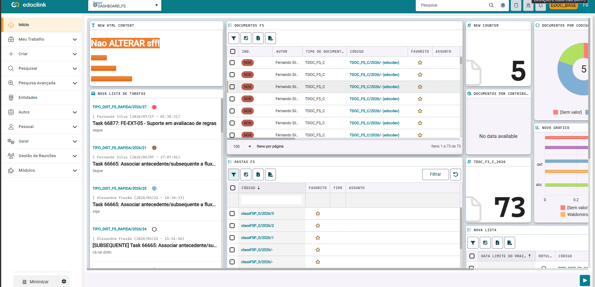

<main class="page">
  <section class="edoclink-screen" aria-label="Demonstração do edoclink">
    

    <edoclink-button
      class="toolbar-voice-button"
      title="Assistente de voz (Alt+A)"
      (pressed)="voiceAssistant.openAndStart()"
    ></edoclink-button>

    <app-chat-assistant
      class="chat-position"
      [messages]="messages"
      (messageSubmitted)="addMessage($event)"
      (voiceRequested)="voiceAssistant.openAndStart()"
      (clearRequested)="clearConversation()"
    ></app-chat-assistant>
  </section>

  <app-speech-recognition
    #voiceAssistant
    (messageSent)="addMessage($event)"
  ></app-speech-recognition>
</main>
